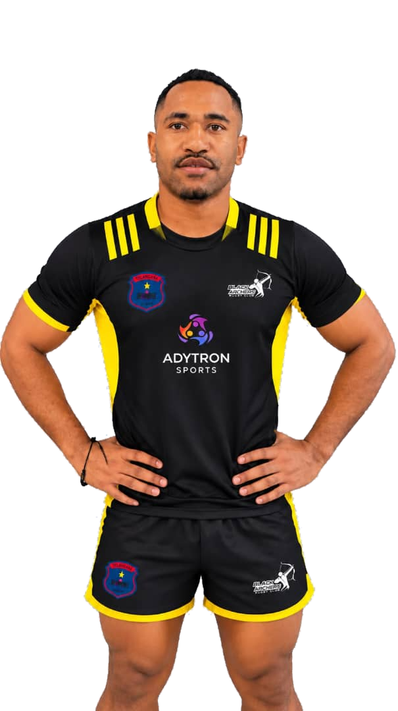

202401 / 06
INTERNATIONAL HONOUR
AIU Bronze
Medal
BRONZE MEDALIST↗
Papua New Guinea · Based in India
RUGBY UNION PLAYER · CENTRE
Built on the fields of Port Moresby. Tested on the biggest stages in Indian rugby.

A game built on grit
Rugby has been part of my life since I was a kid in Papua New Guinea. I brought that love of the game with me to India, where I began my professional career and kept pushing for more.
Read my storyEvery match is another chance to show up.
Here are a few moments that made it count.
INTERNATIONAL HONOUR
HIMACHAL PRADESH
MUMBAI · 90TH EDITION
KOLKATA · 91ST EDITION
HYDERABAD · DECCAN 7s
GOA INTERNATIONAL 7s
The game goes wherever you do
GROWING UP
First picked up the game as a kid. Rugby became more than a sport — it became part of who I am.
2024 — NOW
Bringing the passion of Papua New Guinea rugby to the Indian field. Based at Lovely Professional University in Jalandhar, Punjab, and competing in tournaments across the country.
THE NEXT CHAPTER
New tournaments, new challenges, and more opportunities to represent my roots on the field.
Open to opportunities, conversations, and the next big challenge.
Contact JosephPort Moresby, Taruma Barracks, Papua New Guinea
IN INDIALovely Professional University, Jalandhar, Punjab